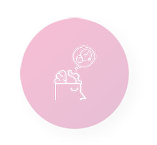
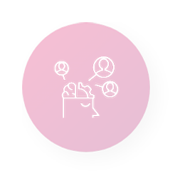
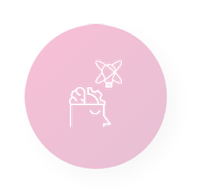

Teorias da aprendizagem
Aprendizagem é um processo que pode ser entendido à luz de diferentes paradigmas com diferentes perspectivas.
As teorias mais conhecidas são:
Clique nos ícones abaixo para saber mais sobre cada uma delas.
O processo de aprendizagem ocorre quando há uma mudança em algum comportamento, algo observável.
A aprendizagem acontece em algum processo interno, cognitivo, como a memória ou processamento de informação.
Avalia processo de aprendizagem pela interação em contextos sociais.
Busca descobrir o potencial individual de cada pessoa.
Define a experiência da aprendizagem como a capacidade de reconhecer padrões para resolver problemas e resolver tarefas necessárias.
Cada Teoria
também vê o papel do professor de uma forma diferente.

Teoria Comportamental: o professor organiza a sala de aula para obter as respostas, ou seja, as mudanças de comportamento que deseja.
Teoria Cognitivista: o professor trabalha com a estruturação do conhecimento para a aprendizagem, preocupando-se em ensinar a aprender.
Teoria Socioconstrutivista: o professor procura estabelecer comunidades de prática com interação deliberada entre as pessoas que aprendem, ou seja, promovem a socialização.
Teoria Humanista: cabe ao professor facilitar e mediar o desenvolvimento holístico.
Teoria Conectivista: o professor busca possibilitar que seus alunos tomem decisões diante do que aprender, quando aprender e onde buscar conhecimento.
Estas categorizações servem para facilitar e iniciar estudos sobre a aprendizagem
e para impulsionar o desejo de explorar o mundo gigantesco do processo de aprendizagem.
Na prática, esta categorização é questionável. Uma ou outra linha que delimita um paradigma pode
estar contida em uma ou mais teorias e podemos nos beneficiar de diferentes contribuições para
conduzir um processo de aprendizagem.